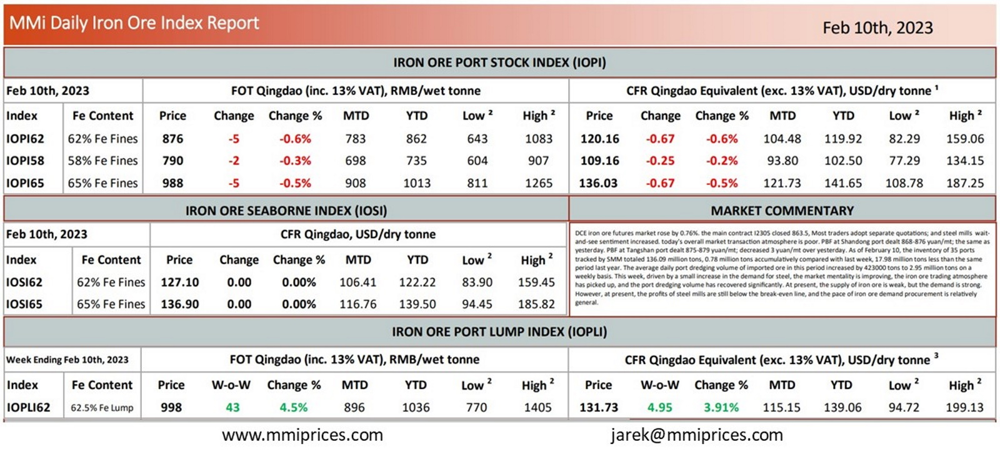

DCE iron ore futures market rose by 0.76%. the main contract I2305 closed 863.5, Most traders adopt separate quotations; and steel millswait- and-see sentiment increased. today’s overall market transaction atmosphere is poor. PBF at Shandong port dealt 868-876 yuan/mt; the same as yesterday. PBF at Tangshan port dealt 875-879 yuan/mt; decreased 3 yuan/mt over yesterday. As of February 10, the inventory of 35 ports tracked by SMM totaled 136.09 million tons, 0.78 million tons accumulatively compared with last week, 17.98 million tons less than the same period last year. The average daily port dredging volume of imported ore in this period increased by 423000 tons to 2.95 million tons on a weekly basis. This week, driven by a small increase in the demand for steel, the market mentality is improving, the iron ore trading atmosphere has picked up, and the port dredging volume has recovered significantly. At present, the supply of iron ore is weak, but the demand is strong. However, at present, the profits of steel mills are still below the break-even line, and the pace of iron ore demand procurement is relatively general.

Download PDFSource: Metals Market Index (MMi)